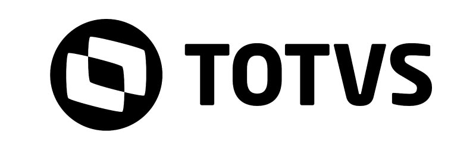

<div class="po-wrapper">
  <po-toolbar p-title="TOTVS Devs. with PO-UI "></po-toolbar>

  <po-menu
    [p-menus]="menus"
  >
  <ng-template p-menu-header-template>
    
  </ng-template>

  </po-menu>

  <po-page-default p-title="TOTVS+">

    <!-- <app-employee-new></app-employee-new>
    <app-employee-list></app-employee-list> -->

    <router-outlet></router-outlet>

    <app-employee-list #employeelista></app-employee-list>

    <!-- <ng-template appGetViewContainer> </ng-template> -->

    <modal-title>
      <h3>Titulo do Modal</h3>
    </modal-title>

  </po-page-default>
</div>

<ng-template #template>
  <p>Meu templante</p>
</ng-template>


